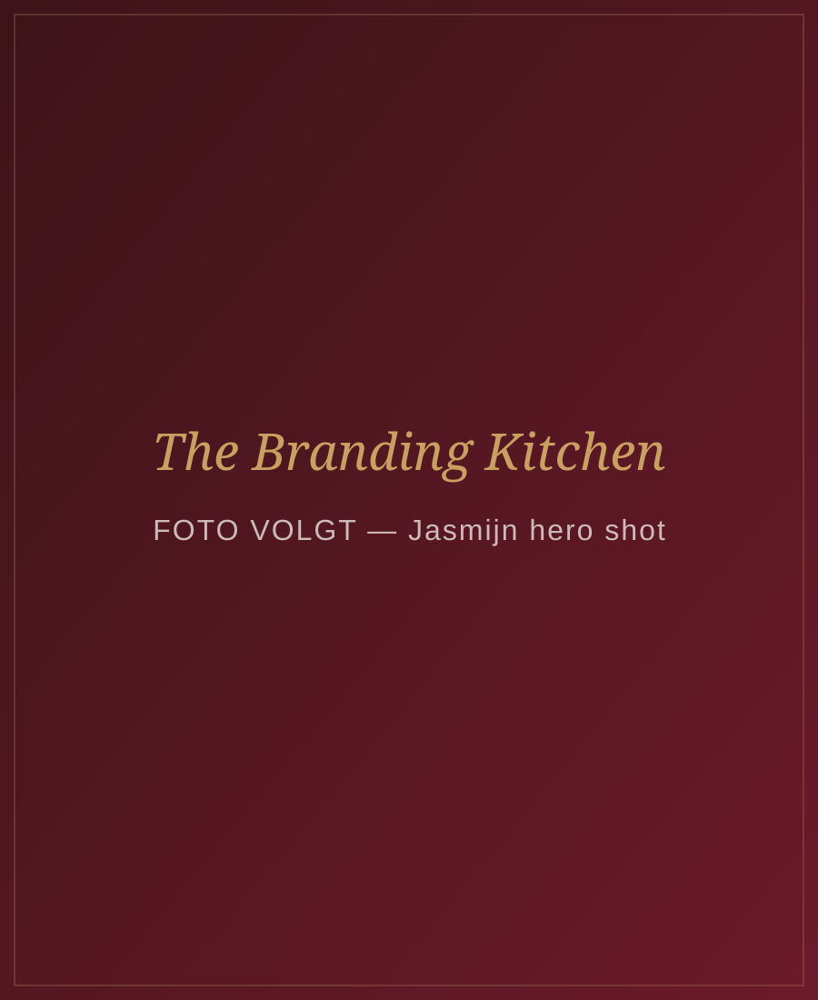
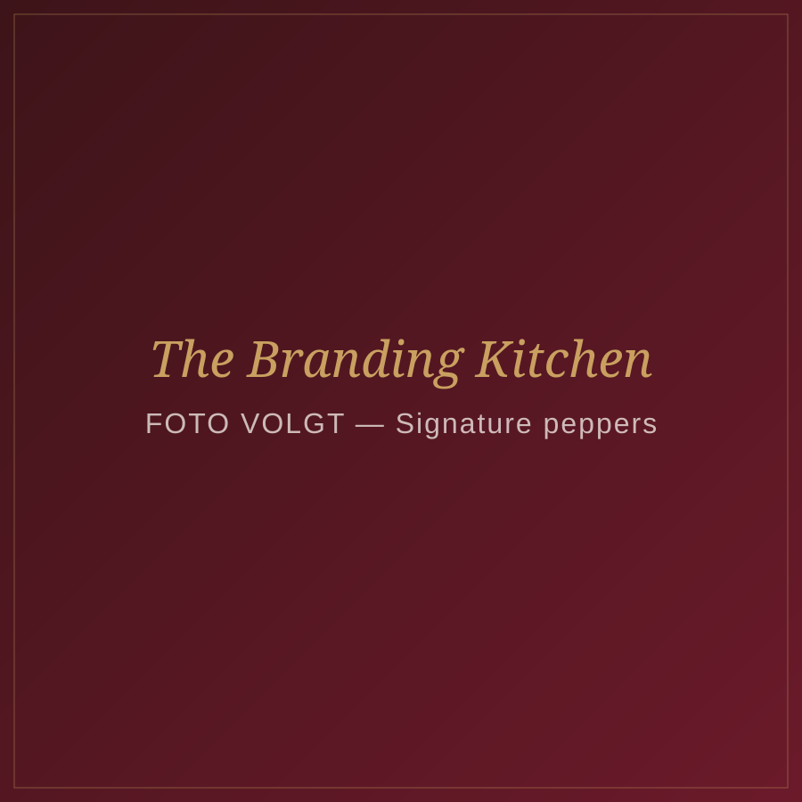
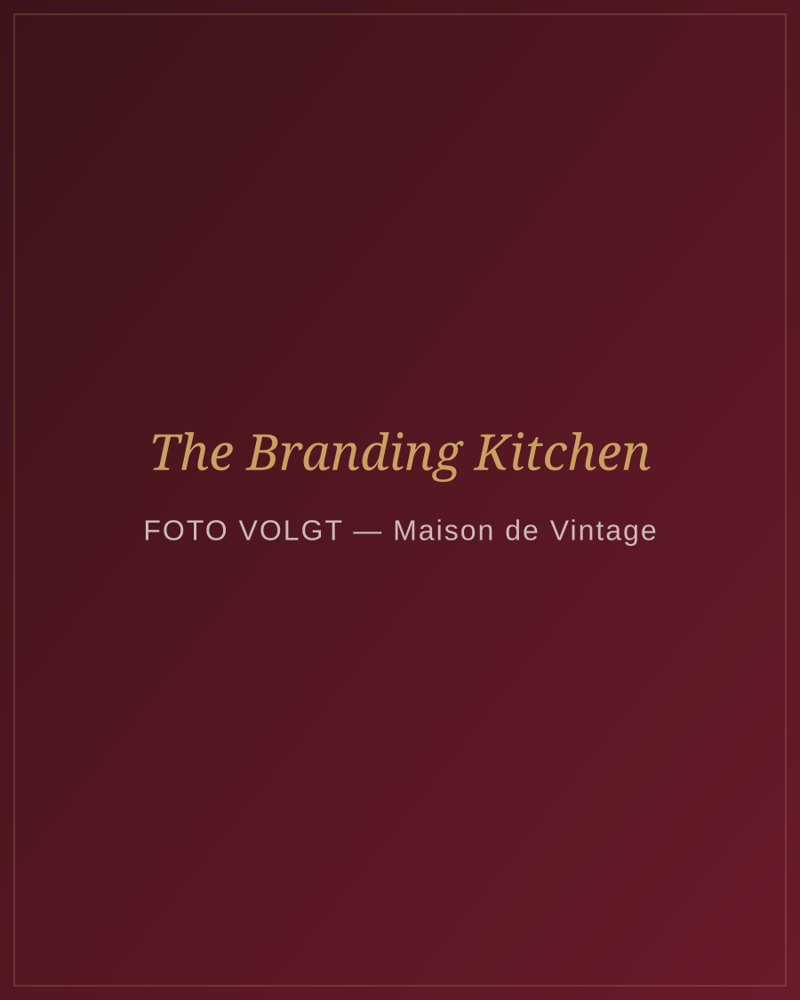
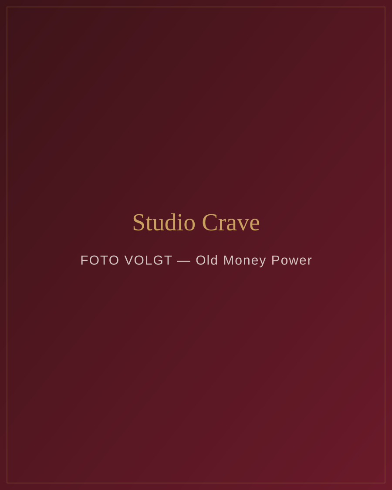
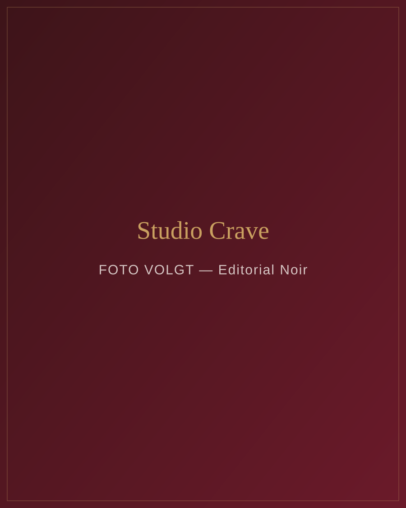
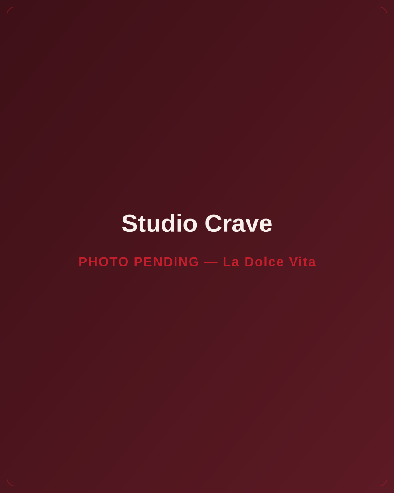
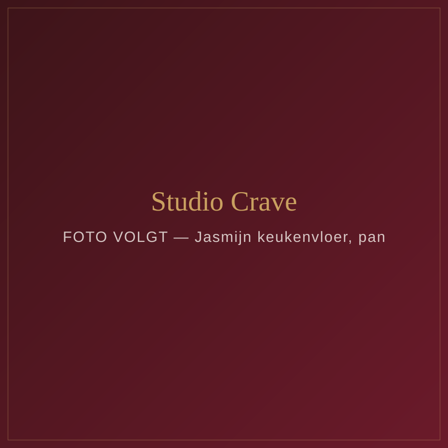

Signature branding voor ondernemers die klaar zijn voor Michelin-level positionering. Van strategie tot plating — alles met smaak.

The Branding Kitchen is niet zomaar een branding bureau. Het is een culinaire positioneringsmachine — voor ondernemers die klaar zijn voor Michelin-level branding.
Terwijl anderen fast food branding serveren, bouw ik signature brands die geproefd worden. Alles draait om smaak, verfijning en memorability.
Ik ben niet je branding coach. Niet je 'social media expert'. Niet je template maker. Ik ben The Chef of Irresistible Brands — de architect van merken die een craving creeren.

"Dit is geen content,— The Branding Kitchen
dit is plating."
Dit is wat er gebeurt als positionering, fotografie en design samenkomen in een signature brand.
Noor — Curated vintage fashion label
Grand hotel luxe. Mahonie, goud, branded packaging op een bellboy cart. Een merk dat voelt alsof je net bent ingecheckt in Le Ritz.

Lina — Business strateeg & leadership coach
Wit pak, vintage cabrio, wijngaarden. Quiet confidence meets onmiskenbare power. Een merk dat zegt: ik hoef niks te bewijzen.

Senna — Luxe PR & communicatie bureau
Parijse editorial. Zijden hoofddoek, rode lippen, een krant als prop. Mysterieus, magnetisch, alsof ze zo uit Vogue stapt.

Eva — Luxury travel & lifestyle ondernemer
Amalfi coast elegantie. Strohoed, witte linnen, een glas wijn met uitzicht. Een merk dat voelt als een eeuwige zomer aan de Middellandse Zee.

Ondernemers die klaar zijn voor fine dining status — maar nu nog met een fast food merk rondlopen.
Ondernemer, ambitieus, je hebt al een business maar je weet dat je merk je tegenhoudt.
Je merk voelt niet als jij. Je werkt hard maar je zichtbaarheid converteert niet.
Een merk dat instant vertrouwen geeft, premium uitstraalt en klanten aantrekt zonder uit te leggen.
Geld investeren in iets wat niks oplevert. Opnieuw beginnen. Altijd zelf alles moeten uitleggen.
Posts die laten zien waarom merken falen — en wat anders moet. Truth bombs, shock & reality.
Educatief over branding, visuals, content. Hoe het eruitziet vs. hoe het verkoopt.
Persoonlijk verhaal, process shots, jouw kijk op het vak. Humaniseren zonder te verliezen.
Klantresultaten, before/afters, testimonials. Social proof als fine dining review.
Jouw trajecten en diensten — gepresenteerd als culinaire experience, niet als productpagina.

Van positionering tot plating — alles is intentioneel, alles klopt, alles heeft smaak.
Ik ben branding-expert en fotograaf. En die combinatie converteert anders.
Ik bouwde mijn bedrijf vanuit passie voor visuele storytelling en strategische positionering. Geen losse tips, geen templates — maar een volledig doordacht systeem dat jouw merk onvergetelijk maakt.
"Ik geloof dat elk merk een signature dish verdient. Iets waar mensen voor terugkomen — niet omdat ze het moeten, maar omdat ze niet anders kunnen."
"Mensen onthouden nooit alleen de smaak... ze onthouden hoe jij ze liet voelen."— The Branding Kitchen
Jouw merk verdient Michelin-level positionering. Laten we samen jouw signature dish bouwen.